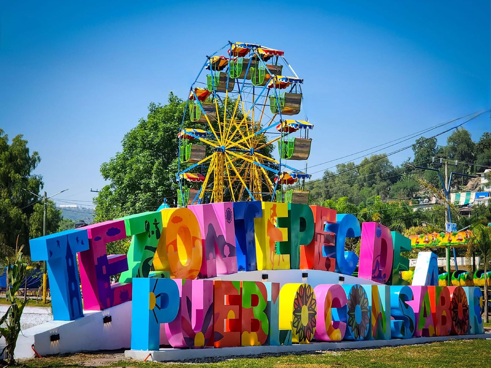

Sobre Nosotros

¡Bienvenido a nuestra aplicación web dedicada a los tesoros turísticos de Tezontepec de Aldama! Somos un equipo apasionado por promover la belleza y la cultura de este maravilloso municipio.
Nuestro objetivo es brindar un espacio interactivo donde los residentes y visitantes puedan compartir y descubrir fotografías de los lugares más encantadores de la región.
En nuestra aplicación, podrás explorar una amplia variedad de imágenes cautivadoras, capturadas por viajeros, amantes de la fotografía y lugareños entusiastas.
Creemos firmemente que cada rincón de Tezontepec de Aldama tiene su propia historia que contar, y estamos comprometidos a preservar y difundir la riqueza cultural y natural que este lugar tiene para ofrecer.